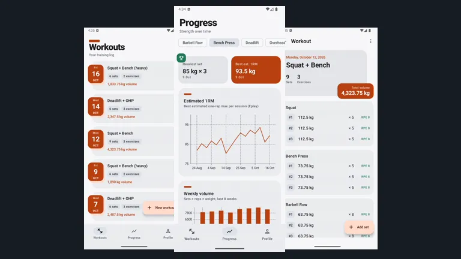
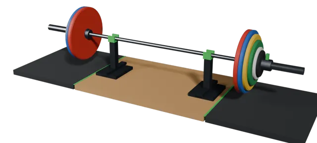
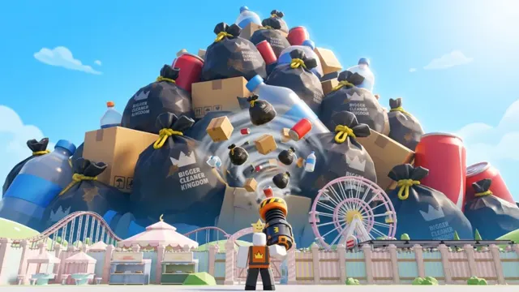
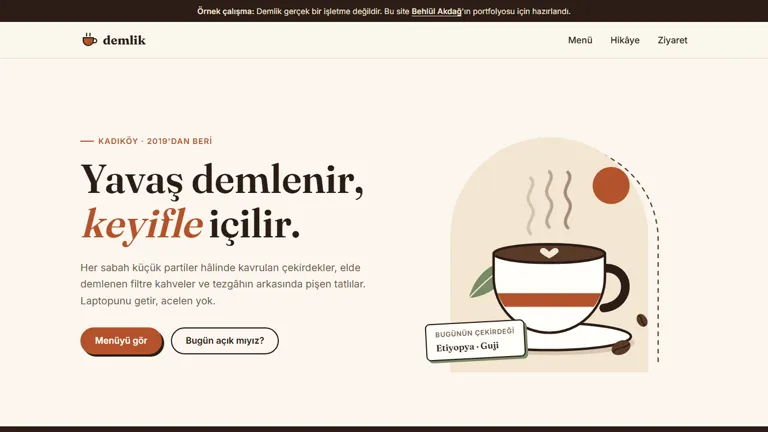
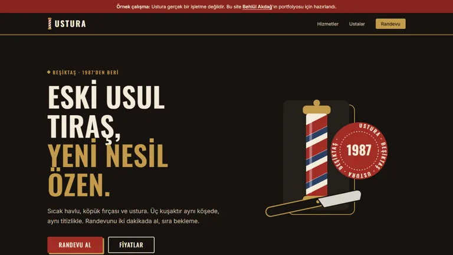
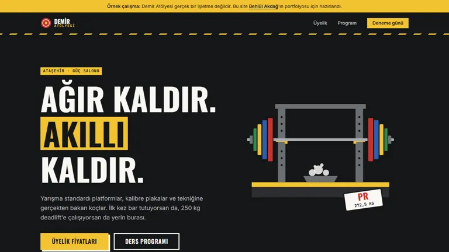

Mobil + web + backend
LiftLog
Antrenman takip uygulaması: set, tekrar ve ağırlıkları kaydet, kişisel rekorlarını ve tahmini 1RM grafiğini izle. Android ve iPhone (PWA) aynı JWT korumalı API'yi kullanıyor.
Bilgisayar mühendisliği öğrencisi · İstanbul
Android ve web uygulamaları geliştiriyor, Roblox'ta oyun yayınlıyor ve küçük işletmeler için hızlı, mobil uyumlu siteler tasarlıyorum.

> whoami
Behlül Akdağ
Yazılım geliştirici · Web tasarımcı
> ls skills/
java kotlin luau html css javascript
> status
● staj ve freelance işlere açıkİstanbul Aydın Üniversitesi'nde bilgisayar mühendisliği okuyorum. Java ile masaüstü uygulamalardan başladım; şimdi Kotlin ile Android, Spring Boot ile backend ve saf HTML/CSS/JavaScript ile web tarafında çalışıyorum.
Boş zamanımda Roblox'ta Luau ile oyun geliştiriyorum ve powerlifting yapıyorum. Antrenmanlarımı takip etmek için yazdığım LiftLog da buradan doğdu.
Yazılım, oyun ve web işlerinden seçmeler. Hepsinin kodu ya da canlı sürümü açık.

Mobil + web + backend
Antrenman takip uygulaması: set, tekrar ve ağırlıkları kaydet, kişisel rekorlarını ve tahmini 1RM grafiğini izle. Android ve iPhone (PWA) aynı JWT korumalı API'yi kullanıyor.
Masaüstü uygulaması
Pastel temalı, karanlık modlu görev ve günlük uygulaması. Gömülü SQLite veritabanı ve Google Gemini ile çalışan bir planlama asistanı var; Java kurmadan çalışan .exe olarak paketlendi.

Roblox oyunu
Zemini çekiçle kırıp derine in, canavarlardan yumurta çal ve çiftliğinde para kazandıran evcil hayvanlar çıkar. Derinleştikçe ödüller büyüyor; yükseltme ve yeniden doğma sistemi var.
Roblox oyunu
Şef parçaları için zar at, beş parçayı birleştirip şef oluştur ve adadaki en işlek mutfağı yönet. Nadirlik sistemi, günlük teklifler ve arkadaşlar arası takas içeriyor.

Web sitesi · kafe
Hayali bir Kadıköy kahvecisi için tek sayfalık site: sekmeli menü, hikâye, çalışma saatleri ve konum. Tüm çizimler SVG ile elde yapıldı; telefonda hızlı açılıyor.

Web sitesi · berber
Klasik bir berber için randevu odaklı site. Form, çalışma saatlerine ve hizmet süresine göre boş saatleri kendisi çıkarıyor; pazartesi ve geçmiş saatleri gizliyor, telefonu doğruluyor.

Web sitesi · spor salonu
Güç salonu için üyelik hesaplayıcılı site: ödeme dönemi ve öğrenci indirimine göre fiyatlar anında değişiyor. Haftalık ders programı gün ve seviyeye göre filtreleniyor.
İşletmenize hızlı açılan, telefonda düzgün görünen ve kolayca güncellenebilen bir site.
Tek sayfalık, hızlı bir landing page: hizmetleriniz, iletişim bilgileriniz ve harita tek yerde.
3–5 sayfalık site: menü ya da hizmet listesi, galeri, randevu veya iletişim formu.
Eski sitenizi modern bir görünüme kavuşturup mobil uyumlu ve daha hızlı hâle getiriyorum.
Fiyat projeye göre değişir; ihtiyacınızı yazın, aynı gün dönüş yapayım.
Teklif isteDepolarım GitHub'dan canlı olarak çekiliyor: en son güncellediklerim üstte.